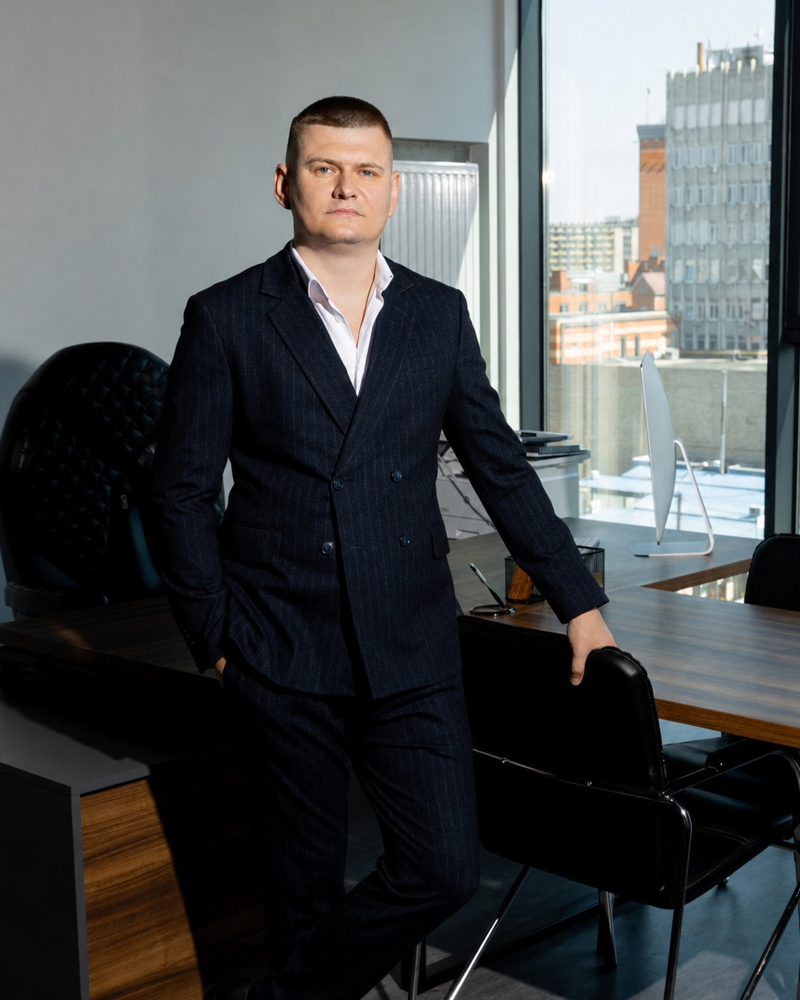

Стратегічність
Кожна дія має працювати на узгоджений результат, а не просто закривати поточне питання.
Ми обʼєднали адвокатів різних спеціалізацій навколо одного принципу: складні юридичні завдання потребують не шаблонної відповіді, а цілісної стратегії.

Ми дивимося на юридичне питання в контексті бізнесу, репутації, активів і особистих інтересів клієнта. Це дозволяє бачити наслідки кожного рішення ще до того, як воно буде прийняте.
Профільний адвокат веде справу, а команда суміжних практик підсилює позицію там, де завдання виходить за межі одного напряму права.
Кожна дія має працювати на узгоджений результат, а не просто закривати поточне питання.
Ми працюємо поруч із клієнтом, пояснюємо рішення й залишаємо контроль там, де він має бути.
Не обіцяємо неможливого. Беремося за те, що можемо професійно захистити та довести.
Обʼєднання виросло з простої ідеї: адвокати різних спеціалізацій, які роками працювали поруч, вирішили зібрати свою експертизу під одним дахом. Так зʼявилася команда, де кожне складне завдання веде профільний адвокат, а суміжні практики підсилюють позицію. Клієнт отримує не одного фахівця, а цілісний захист своїх інтересів.
За нашими плечима — досвід роботи у правоохоронній і судовій системах, який дозволяє передбачати кроки опонентів. Ми працюємо на результат і зберігаємо повну конфіденційність кожної справи. Дистанційний формат дає змогу супроводжувати клієнтів у будь-якій точці світу, без привʼязки до кабінету.
Ми чесно оцінюємо перспективи справи, без прикрашання й порожніх обіцянок. Строки, план дій і комунікація залишаються прозорими на кожному етапі. За результат особисто відповідають партнери, а не абстрактна структура.
«Ми жодного разу не зустрілися особисто, але я весь час відчував контроль над ситуацією. Активи вдалося зберегти, а всі документи погоджувалися дистанційно й вчасно. Формат роботи виявився навіть зручнішим за особисті зустрічі.»
«Сімейний спір — це завжди боляче, але тут до ситуації поставилися з повагою і тактом. Мені пояснили кожен крок і жодного разу не тиснули на емоції. Питання опіки вирішили спокійно й на мою користь.»
«Прийшов із питанням щодо ТЦК у повній розгубленості. Отримав чітку стратегію дій і розуміння своїх прав крок за кроком. Затримання вдалося зняти, а я нарешті перестав панікувати й діяв за планом.»
Перша розмова допоможе визначити контекст, ризики та наступний розумний крок.
Обговорити конфіденційно ↗